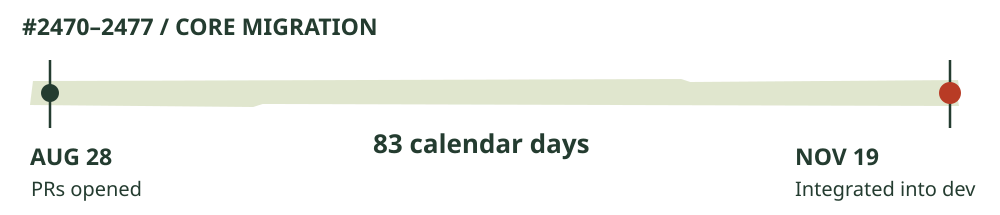
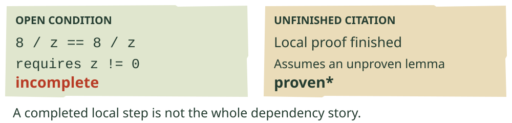
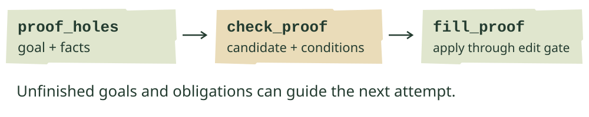
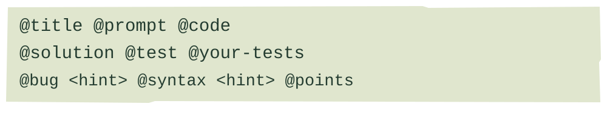
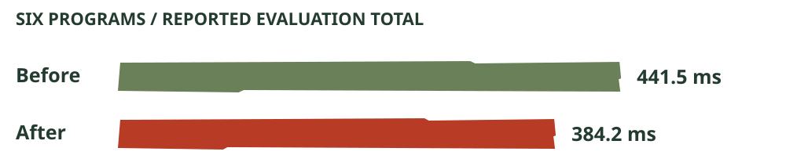
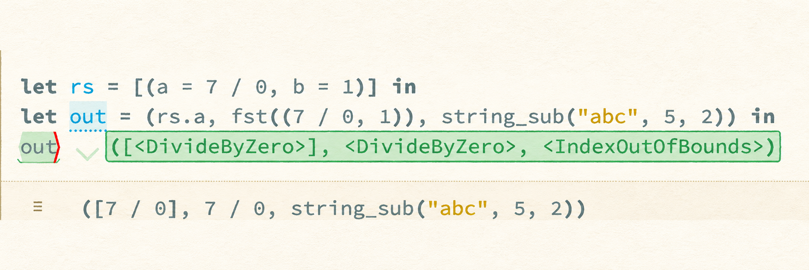
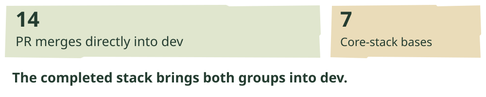

Checking the work.
The Core stack lands, a draft prover makes proof steps editable and checkable, and classroom repairs share a busy merge day with worker and ID improvements.
In this issue
- The Core stack lands together.
- A proof becomes something the editor checks.
- Write a goal; keep the proof.
- The rule picker opens again.
- A faster worker path, with a follow-up.
- An error should keep its name.
- A new toolchain, still on its own branch.
- Twenty-one merges, and the editing details.
- The reply was already here.
Dev / November 19
The Core stack lands together.


PRs #2470–2477 opened August 28 and merged November 19. The line shows elapsed calendar time, not a claim of continuous work.
Alexander Bandukwala’s Jane Street Core migration reached dev on November 19, nearly twelve weeks after its PRs opened. The stack moves through utility code, language, web, evaluator infrastructure and tests before making a final pass over shared idioms. It is a broad change to the implementation’s everyday vocabulary, rather than a new construct for Hazel programs.
The first step, #2470, is an entire Dune library: opening Core applies to the stanza, so every source file in that library must compile together. The migration deliberately keeps the public map and set interfaces in their existing standard-library shape. Changing those container APIs at the same time would force unrelated downstream changes before the rest of the stack was ready. Core was already a transitive dependency, so this is not simply adding a new runtime library to the browser bundle.
The final pass, #2477, replaces familiar hand-written combinations with library operations: empty-list tests, concatenated maps and repeated option handling. It also removes unused helpers and their tests. One worthwhile restraint remains in OpenRouter: a fallback stays lazy in a switch; replacing it with an eager two-argument option combinator would evaluate work that may not be needed.
A companion landing, #2517, removes the implementation’s homegrown Either. Most callers really mean success or failure and now use Ok and Error. The two genuine partitioning callers use Core.Either. Hazel’s own language-level Either alias is a different thing and remains available.
Matt Keenan’s November 5 review favored merging the migration together and noted its conservative treatment of containers; he approved the first PR on November 19. GitHub records seven members of the stack as merges into feature bases, but their code comes into dev through the completed stack. Counting only the PRs whose base literally says dev would hide much of this landing.
Draft prover / #2823
A proof becomes something the editor checks.


Two different reasons to withhold an unqualified “proven”: an unresolved mathematical condition, or a completed proof that assumes an unfinished theorem.
Matt Keenan’s #2823 gives theorem declarations a checked proof and makes the stepper a second view of that proof. A theorem states a Boolean proposition; proof steps transform its goal until it reaches true, false or an unfinished state. Editing the proof text changes the stepper, and using the stepper writes proof text.
The draft’s Theorems slide starts with 2 * 3 == 6. A focused step evaluates the multiplication, then another evaluates the equality. The otherwise identical statement 2 * 3 == 7 becomes refuted. An empty proof remains incomplete. That small example establishes the contract before the branch introduces rewriting, induction and more elaborate proof structure.
A step also has conditions. Rewriting 8 / z == 8 / z by reflexivity cannot silently ignore division by zero: it leaves z != 0 to establish. Facts already in scope or evaluation can discharge a condition; otherwise it stays open, shown by a red circle on the step. The stepper offers ways to prove it locally or split into cases. A theorem with an unresolved condition is not displayed as an ordinary completed proof.
Citations receive a separate distinction. A finished proof relying on an unfinished theorem is marked proven*, with the dependency named in a tooltip. Citing a refuted theorem is an error. Exercise scoring counts fully proven theorems, preventing a student from earning credit by citing an unfinished lemma that merely restates the goal.
Checking runs with evaluation in the worker, and a theorem’s result can be reused while its text, cited verdicts and referenced definitions remain unchanged. The branch is still a draft, with tests recording remaining mismatches; its status labels describe this implementation’s checker, not a claim of formally established soundness. The November 19 source also limits verified algebraic steps to its supported integer arithmetic fragment, leaving unsupported operations as open conditions.
Drafts on the prover branch
Write a goal; keep the proof.


The proposed tool loop checks a candidate before applying it. Open goals and conditions remain available for another pass.
The new stepper’s Write box asks for the goal you want next. A bounded search looks for checked steps that reach it; an empty box offers the next evaluation step or reflexivity, accepted with Tab. Selecting part of a goal narrows the work. The Step tab highlights possible reductions, while Strategy inserts structured proof forms with holes. These are ways to author a proof that remains visible and editable.
Matt Keenan’s #2834 brings Filbert into that workflow. Typing ?? in a scratch cell starts a request in the active chat. Loading a program that already contains those characters starts nothing. proof_holes lists unfinished proofs and their local facts, check_proof tries proposed text and reports goals and obligations, and fill_proof applies it through the ordinary edit gate. Removing the request or using Stop cancels it.
The tool path parses, prints and reparses a candidate before checking it, so the checked syntax matches what the editor will hold. A benchmark harness contains 21 theorems across five tiers, including difficult open STLC steps, but the existence of that harness is not a success-rate result. The useful claim is a loop in which an agent can inspect a goal, test a partial proof and respond to specific remaining obligations.
Other drafts extend what can be written. #2822 adds Boolean guards to patterns and carries their restrictions into proof contexts. This is a pattern use of where, distinct from the trailing-binding proposal in Issue 009. Guards run in left-to-right matching order; a false guard can try a later case, while an indeterminate one leaves the computation stuck.
#2827 adds an explicit contradiction step, #2833 explores natural-number induction with patterns such as m + 1, and #2835 lets a focus select a run within an associative chain. Each is a separate draft built on the prover, not part of this week’s dev release.
Dev repairs / proposed exercise format
The rule picker opens again.


Selected sections from the proposed exercise format. Hidden bugs and syntax checks can repeat; derivation trees remain in their existing format.
Derivation exercises regained a fundamental control this week. Cyrus Omar’s #2841, based on Alexander Bandukwala’s diagnosis in #2591, restores the Switch Rule palette. Its element had become lazy, but two callers still tried to read the shadow root from the unforced value. The exception stopped the palette opening and could leave a repeating timer throwing errors.
The landed fix forces the element, handles a missing shadow root and bounds the retry loop. Alexander’s review went further: if the helper still accepted any value, the same mistake could return silently later. The final helper is typed as taking a DOM element, so passing an unforced lazy value becomes a compile-time error. Browser checks reported both evaluation-derivation rules and propositional-logic scratch rules working again.
Andrew Blinn’s #2644 also landed, bounding the derivation stitching cache at eight entries. Previously, caret moves could keep successive whole exercise states alive indefinitely. The aim is to retain the near-term cache hits without retaining every past editor state. His #2657 restores source indentation in documentation and regenerates bundled exercise and derivation examples with their indentation intact.
Cyrus’s draft #2846 takes the next step for code and theorem exercises: replace generated zipper modules with readable .hzt files, using marker sections for prompts, starter code, solutions, tests and hidden bugs. About 108 KB of serialized material becomes roughly 3 KB of text in the proposal. Derivation exercises keep their existing tree representation; they do not fit the same flat section format.
Exercise IDs and hidden-bug ordering are preserved so saved work continues to match. There is a practical limit to editing the new files: existing student state retains its saved implementation and some copied metadata. Changing a starter or prompt does not automatically replace what a student has already saved. The format makes authoring and review easier without pretending saved progress has disappeared.
Dev / #2652 and #2816
A faster worker path, with a follow-up.


Author-reported medians over five rounds, Node 22 on one laptop; sum of six heavy program evaluations. These are evaluation timings, not typing latency.
Matthew Hammer’s #2652 prevents a busy main thread from declaring a responsive evaluation worker dead. The worker now starts while the page is loading, before the first heavy calculation. A deadline that fires more than 250 ms late gives queued replies a further 500 ms to be handled before deciding to terminate the worker.
That grace is capped at two postponements. Background-tab timers can themselves be throttled, so an unlimited late-timer exception would let a runaway worker escape its intended deadline. Cyrus Omar’s approval cites browser checks of an infinite loop, a slow successful computation and a long main-thread block. The failure was exposed by livelit-branch workloads; landing the fix is not evidence that ordinary dev examples had the same long stalls.
Another Matthew landing, #2816, makes IDs directly as strings and uses specialized string and integer comparisons in maps. A cached suffix means successive IDs usually need one concatenation. His reported Node 22 laptop benchmark totals 441.5 ms across six heavy programs before the changes and 384.2 ms afterwards, about thirteen percent less. Almost all the evaluation gain comes from the first change; the suffix optimization’s roughly one-percent contribution lies within the run-to-run spread.
There is already a correctness follow-up. Cyrus’s open #2847, filed later on November 19, finds that two bit expressions lost their intended grouping. Their masks clear the UUID version and variant bits just set. IDs remain unique, but their marker bits no longer have the intended v4 layout. The proposed parentheses repair preserves the faster construction and adds tests across suffix and counter boundaries.
That follow-up is not merged at the cutoff. The speed measurements and the marker-bit defect are separate facts, both relevant to the landing. The original PR and approval described byte-layout preservation, but the follow-up demonstrates that this part of compatibility remains unfinished at the cutoff.
Open proposal / #2839
An error should keep its name.



Cyrus Omar’s preview capture for #2839, with an optional light print treatment. The green probe retains two DivideByZero errors and an IndexOutOfBounds error.
A failed operation should remain recognizably failed when its result travels through a tuple, a list or a function. Cyrus Omar’s #2839 repairs dynamic error holes that could lose their wrapper or be evaluated again. The proposal builds on Matthew Hammer’s modulo-by-zero investigation in #2825, which arose from comparing compiled and interpreted runs.
The screenshot puts a probe on a tuple of results. Two divisions by zero and a substring operation beyond the string’s bounds remain labeled errors after projection. Before the repair, those paths could display ordinary-looking failed expressions instead; the substring also lost arguments from the recorded call. Re-evaluating a malformed modulo error could even try to call a nonexistent built-in named mod.
The fix treats a dynamic error hole as final, like an empty hole, and preserves the whole failed operation inside it. In the stepper, 7 / 0 then takes one arithmetic step and stops. Previously, each click could wrap another error around the same operation and offer the same step again. The proposal also records the correct built-in names and complete argument lists in their error holes.
A separate draft, Cyrus’s #2836, makes successful steps easier to inspect: an underlined justification can reveal on hover which variables were substituted by a tuple let, function application or case selection. This reimplements Josh Wang’s earlier #1876 on the current stepper and credits Josh as co-author. The popup overlays later steps instead of moving the layout. Both proposals remain outside dev at the cutoff.
Draft toolchain / open font proposals
A new toolchain, still on its own branch.
Cyrus Omar’s work-in-progress #2838 gets Hazel building with js_of_ocaml 6 and Jane Street’s v0.18 preview packages on mainline OCaml 5.4.1. The branch reports non-UI libraries, the web app and quick tests working, with the UI still using Bonsai’s legacy proc API. It is separate from the Core migration that has just landed.
The optional experiment inside it is a WebAssembly evaluation worker. On the branch’s evaluation benchmark under Node, Cyrus reports roughly 77 ms per run as Wasm against 209 ms as JavaScript, with the same result. That is one workload and one execution setup, not a general claim that the editor is 2.7 times faster. The page still has its own rendering and analysis costs.
The setup script creates a separate opam switch and keeps dependency repositories scoped to it. Several compatibility patches remain, including a different implementation of a dynamic-binding facility for JS and Wasm. The newer Reason formatter also differs enough to rewrite hundreds of files, so the branch deliberately avoids running the usual auto-promoting formatting commands. This is a working upgrade path with integration work left, not a routine version bump already on dev.
Two Matthew Hammer proposals address what ships with the page. #2837 replaces the bundled Helvetica Neue interface fonts with IBM Plex Sans and includes its open font license. Source Code Pro remains the code font. #2842 bundles Material Icons, removing the command palette’s startup dependency on Google Fonts. Both are open in this window.
Bundling that icon font prevents command names such as undo from appearing as bare words when its remote font cannot load. It does not make the AI assistant offline, and directly opening index.html as a local file still encounters browser restrictions on modules and workers. The useful distinction is a self-contained editor served from a suitable origin, rather than a promise that every Hazel service works without a network.
November 13–19 UTC
Twenty-one merges, and the editing details.


Direct PR destinations: 14 dev, 7 feature-stack bases. All seven stack merges are also represented in the week’s completed Core integration.
The week records 20 new PRs, 21 PR merges, four new issues and two issue closures. Fourteen merges target dev directly; seven target members of the Core stack, whose changes also reach dev. This is a count of GitHub events, not 21 independent new features. Many of the repairs had been proposed weeks earlier.
The remaining dev landings include three changes to editing feel. Andrew Blinn’s #2625 makes the caret snap during rapid input, #2705 keeps Home and End from crossing a spaces-only line, and #2667 prevents Undo from restoring stale font metrics after reload or zoom. That last fix keeps probes, caret positions and click targets aligned with the font actually on screen.
Cyrus’s #2768 looks through parentheses and projector wrappers consistently when inspecting a term’s head. It fixes cases where folding or parenthesizing a constructor, module or theorem changed what statics or proof machinery recognized. Alexander’s #2803 lets Introduce unfold a recursive expected type: a recursive tuple hole can receive a tuple skeleton. A self-only recursive type still offers no usable shape.
The cutoff-dev ancestry census contains 91 commit objects: 57 non-merges and 34 merges. Fifty-seven declare a Claude co-author; none declare an OpenAI co-author. Separately, 68 contain a cryptographic signature field, without validation here. The sets can overlap. These are recorded declarations and objects, not a percentage of code written by agents.
Ninety of those objects carry November 19 committer dates, reflecting integration and rebasing as well as newly written code. The measure excludes unmerged prover and toolchain work and follows the narrower census introduced in Issue 009. It is useful for locating a concentrated landing day, not reconstructing how many people worked on each earlier day.
Fictional comic
The reply was already here.

Fictional service-window dispute, after #2652. A queued reply needs a chance to be heard.
The snail has delivered the answer. The octopus has been too busy processing the office to receive it. Their disagreement borrows the shape of the worker timeout bug: an elapsed deadline on a blocked main thread does not establish that the worker failed to reply. Neither animal is a contributor portrait, and no molluscs were used in the browser tests.
The cover’s paper bridge takes a different problem from the prover: a step can look finished while a condition underneath it remains open. Next to watch are the prover’s interaction and scope rules, the UUID follow-up, the readable-exercise proposal and the new compiler branch’s integration. AI editor and reporting: Astra. Cover and comic are generated illustrations; the screenshot is credited to its PR source, with an optional generated print treatment. Reporting closes November 20, 00:00 UTC.